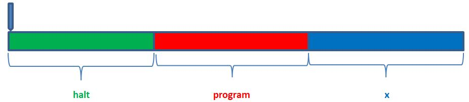
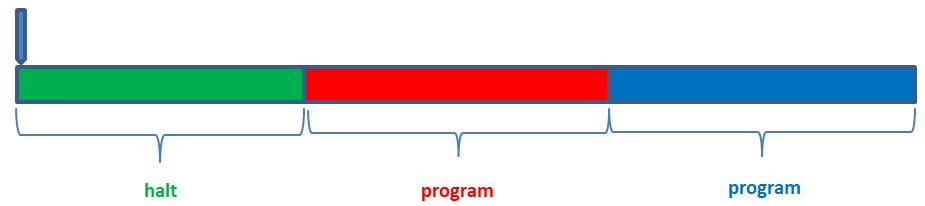
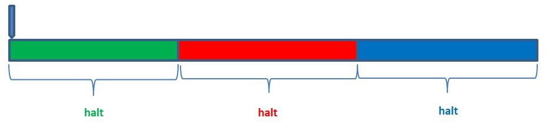

停或不停？
December 16, 2021藉由撰寫不同的程式，就可以令通用機器進行各種運算，也就可以將重複性的工作，從人力運算者的身上解除，只要集結的基礎運算程式夠多，就能組合更複雜的運算，許多難解的數學問題，也許都可以藉此獲得證明，剩下的就只是機器運算出答案必須耗費多少時間的問題？
停機判定
時間！如果問題確實有解答，那麼耗費時間也許都是值得的，問題就在於，問題一定會有解答嗎？估且將問題的答案限縮在只要回答是或否好了，最後一定會得到「是」或「否」嗎？有沒有可能機器始終是不停止的，令「是」或「否」的答案都無法得到。
在〈Brainfuck 看狀態〉中看過，機器在幾個狀態之間重複地循環是有可能的，不會當機也不會停止，若撰寫的程式會落入這種循環，耗費任何一點時間就都是不值得的，既然有了通用機器了，也許可以寫個通用程式，判斷接下來指定要運算的任意程式，在接受任意輸入時是否可以停止，有了這個通用程式，在運行任何程式之前先給它判定一下，就知道花時間等待機器的答案是不是值得了。
例如，用 Brainfuck 寫個程式，判斷另一個 Brainfuck 寫的程式，在某些情況下是否可以停止，用某語言寫個程式，用該程式來執行該語言寫的另一個程式？有可能嗎？現代開發早就有這類例子了，這並不是什麼稀奇事！
假設，Brainfuck 寫出一個 halt 程式，可用來判斷任意程式 program 可否在輸入任意 x 時停止，磁帶上的資料分佈，概念上大概像是底下：

既然 x 可以是任意輸入，那把 program 也當成是 x 應該也是可以的：

可以寫得出 halt 程式嗎？halt 一定是會停止的程式吧！因為它一定會給出「是」或「否」的答案，也就是執行底下的話，答案為「是」：

halt 函式可能嗎？
用 Brainfuck 來思考有點太繁複，估且用 JavaScript 來思考吧！同樣是程式語言，JavaScript 若寫得出來，理論上 Brainfuck 也寫得出來，正好 JavaScript 的函式是一級值，函式既可以當成是程式也可以當成是資料。
首先，假設存在一個 halt 函式，可以接受任意函式與任意輸入，判斷被指定的函式最後會不會停止，若是傳回 true，否則就是 false。
function halt(f, x) {
// f 接受 x 後會停止就傳回 true，否則傳回 false
}
也許現在有個需求，在函式 f 會停止的情況下，希望能由另一個無限循環取代：
function foreverIfHalt(f) {
if(halt(f, f)) {
while(true);
}
}
問題來了，若執行 foreverIfHalt(foreverIfHalt)，到底接下來是無限循環，或者就此停止呢？需求上來看，foreverIfHalt 會在指定的函式會停止時無限循環，因此，foreverIfHalt(foreverIfHalt) 一定是無限循環吧？
這麼說來，halt(foreverIfHalt, foreverIfHalt) 會是 true，因為這樣才會執行無限環循的 while 迴圈，也就是在 halt 的判定之下，foreverIfHalt(foreverIfHalt) 必須是會停止的！
前後矛盾了！之前說 foreverIfHalt(foreverIfHalt) 要無限循環，現在又說 foreverIfHalt(foreverIfHalt) 會停止。
那麼就是說，foreverIfHalt(foreverIfHalt) 是會停止的囉！若是如此，表示 halt(foreverIfHalt, foreverIfHalt) 必須是 false，以免執行 while 迴圈，也就是 halt 的判定之下，foreverIfHalt(foreverIfHalt) 必須是無限循環！
也是前後矛盾了！之前說 foreverIfHalt(foreverIfHalt) 是會停止的，現在又說 foreverIfHalt(foreverIfHalt) 必須是無限循環！
悖倫
「假設有個 halt 可判定在指定的函式與輸入下可否停止，若執行 foreverIfHalt(foreverIfHalt)，到底接下來是無限循環，或者就此停止呢？」無法回答是或否，「與」之間的內容整個是悖倫，根本不存在 halt 這種函式！
這就像是『有個從不說真話的騙子說：「我現在正在說謊」，請問他說的是真話還是假話？』無法回答真話或假話一樣，『與』之間的內容整個是悖倫，根本不存在這種騙子！
記得在〈等價匿名函式？〉中曾經假設 eq 存在，試圖寫出 is_halt，從而證明了 eq 不存在嗎？這邊進一步地證明了，就算捨棄 eq，試圖用任何其他方式來實作 is_halt，實際上也是不可能的！